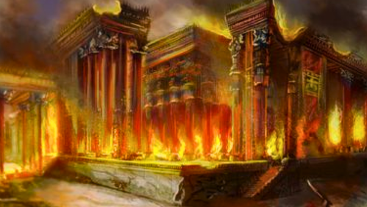
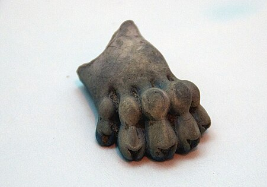
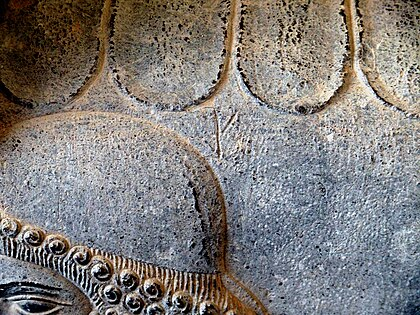
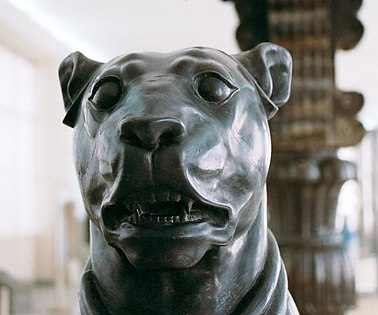
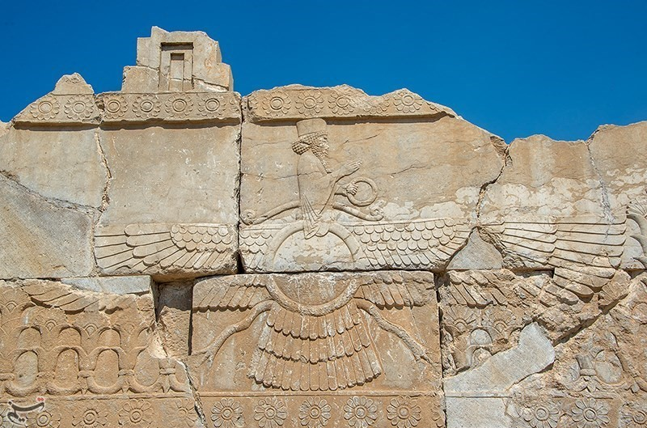
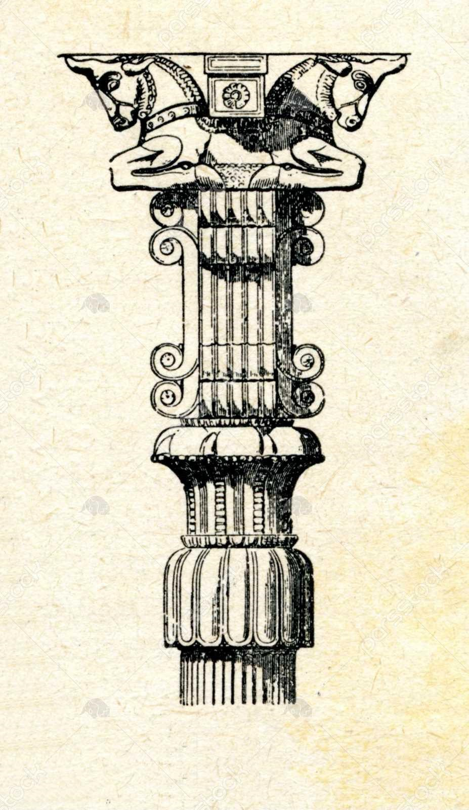

.تخت جمشید,پارسه و یا پرسپولیس مجموعهای از چند کاخ تو در تو در کنار دشت مرودشت و در کوهپایهٔ کوه رحمت در استان فارس واقع در شهر مرودشت ایران است
.تخت جمشید,پارسه و یا پرسپولیس مجموعهای از چند کاخ تو در تو در کنار دشت مرودشت و در کوهپایهٔ کوه رحمت در استان فارس واقع در شهر مرودشت ایران است
.تخت جمشید,پارسه و یا پرسپولیس مجموعهای از چند کاخ تو در تو در کنار دشت مرودشت و در کوهپایهٔ کوه رحمت در استان فارس واقع در شهر مرودشت ایران است
.تخت جمشید در دوران داریوش بزرگ ساختش شروع شد و بر خلاف باور عموم کوروش بزرگ نقشی در ساخته شدن آن نداشت
ساختن تخت جمشید هیچگاه پایان نیافت تا دست اخر به دست اسکندر مقدونی در سال 330 پیش از میلاد به آاتش کشیده شد
معماری تخت جمشید به دست معمارانی به نام در آن دوران صورت گرفت که آنان از تمام ملل های دنیا که شاهان هخامنشی در آنان نفوذ داشتن شکل گرفت ملل هایی همچون:آشوریان,بابلیان,مصریان و غیره
جبههٔ پلکان را بهطور کلی به قسمت شمالی (سان سربازان و بزرگان)، مرکزی (مهتابی جلو) و جنوبی (سان هدیهآوران) میتوان تقسیم کرد. هر یک از آنها ۷۸ گام طول و ۹ گام بلندی دارد. قسمت میانی مهتابی جلو،
۹ گام بلندی و دو برابر آن طول دارد و دو شیب پلکانهای متقارن آن هر یک قاعدهای به طول ۳۰ گام دارند.
از لبهٔ مهتابی جلویی تا آغاز شیب هر یک از پلکانهای متقارن مهتابی عقبی، درست ۷۸ گام میشود و در همه این اعداد ضریبی از عدد ۳ را که در ایران باستان مقدس بوده است، مییابیم.
اعداد ۳، ۷ و ۹ اعدادی مقدس دانسته میشدهاند و بررسی این نگاره موارد زیر را در تخت جمشید ثابت کرده است:
آپادانا در مجموع ۷۲ ستون دارد که برابر ۷۲ فصل یسنای اوستا ۷۲ رشته کشتی (کستی) است که ایرانیان باستان به کمر میبستهاند.
بر نقوش بارعام کاخ صد ستون و نقشنمای آرامگاهها، پادشاه و شش تن از یارانش را نشان دادهاند که درست مانند قرار گرفتن
اهورامزدا در میان شش فرشته بزرگ در باور ایرانیان باستان است و تأییدکننده زرتشتی بودن هخامنشیان است.
پلکان بزرگ شمالغربی ۱۱۱ پله (یعنی سه بار عدد یک) دارد که حاصل ضرب ۳۷ در عدد ۳ است و شمار منزلهای راهشاهی از شوش تا سارد هم درست ۱۱۱ بوده است.
چیزی که اکنون قابل استناد است این است که در آن دوران مجسمه سازی مرتبط با معماری بوده است
از طریق تزیینات مجسمهسازی نشان میدهد که پادشاه ایران بر همه سفیران و رعایا (که نشان داده شدهاند در حال ادای احترام بیپایان و ابدی هستند) فرمانروایی میکند
نقش برجسته های تخت جمشید زمانی حکاکی شده اند که امپراتوری ایران در دوره هخامنشی در اوج قدرت خود بود نقش برجسته نیز یک تکنیک مجسمه سازی است
علاوه بر صنعتگران و معماران,مجمسه سازان یونانی نیز در تخته جمشید کار میکردن آنها مجسمههایی به اندازه واقعی از سگها، گاو نر و بز را ساختند که به عنوان چهرههای نگهبان سنتی خاور نزدیک عمل میکردند
| پنجه شیر ساخته شده از سنگ لاجورد، در موزه تخت جمشید | نشان دادن جزییات در سنگ نگاره یک سرباز هخامنشی | مجسمه سگ ، کشف شده از ضلع جنوب شرقی آپادانا |
یکی از نکات بسیار جالب قابل مشاهده درون سنگ نگاره های تخت جمشیداین است که هیچکس در آن ها سرافکنده نیست چه مردمان سرزمین پارس
و چه مردمان دیگر
در سنگ نگارهای تختجمشید فاصله هر ملت به وسیلهٔ یک درخت سرو، که درخت مقدس میباشد، جدا شده است. درجهبندی نمایندگان ملل بر پایه فرهنگ و سابقه یا دوری و نزدیکی آنهاست مانند:
مادها، ایلامیها، خوزیها، بابلیها، آشوریان.
راهنمای ملل، پارسی و مادی یا ایلامی است که دست در دست ملل دیگر جهت راهنمایی مهمانان مشخص شده است و مردم همه ملل آزاد بودند تا از لباس، فرهنگ و زبان خود استفاده نمایند
در صف نمایندگان و در کل تخت جمشید هیچکس سوار بر اسب نیست، هیچگونه سعی در برتر نشان دادن یا تفاخر پارسیها نسبت به ملل دیگر را نمیتوان دید.
نمایندگان ملل دستهایشان را به نشانه دوستی به طرف همدیگر دراز کردهاند. داشتن عصا نشان از مقام و درجه عالیاست،
کلاه شیاردار بلند نشانهٔ مقام ارتشی و کلاه بلند ساده نشانه از بزرگی و کلاه استوانه کوتاه نشانه از کارمند درباری و گارد سلطنتی و خدمتگزاران میباشد
سنگنگاره پیشکشآوران تخت جمشید طرح سنگ نگارهای است که در قسمتهای مختلف کاخهای هخامنشیان در تخت جمشید دیده میشود.
این طرح، پیشکشآورانی را نمایش میدهد که هر کدام با حمل یک تحفه از پلکانی بالا میروند.
از این طرح در کاخ هدیش (کاخ اختصاصی خشایارشا) و کاخ تچر (کاخ اختصاصی داریوش بزرگ) استفاده شده است. یکی از ویژگیهای منحصربهفرد سنگتراشی و معماری هخامنشیان،
تخته سنگهای تراشیده و حکاکی شدهای است که در دیواره پله-گذرهایی که به سمت تالارها و کاخهای جشن و مراسم منتهی میشوند، قرار دارند.


با مراجع به لینک درج شده در تصویر از منبع دیدن کنید